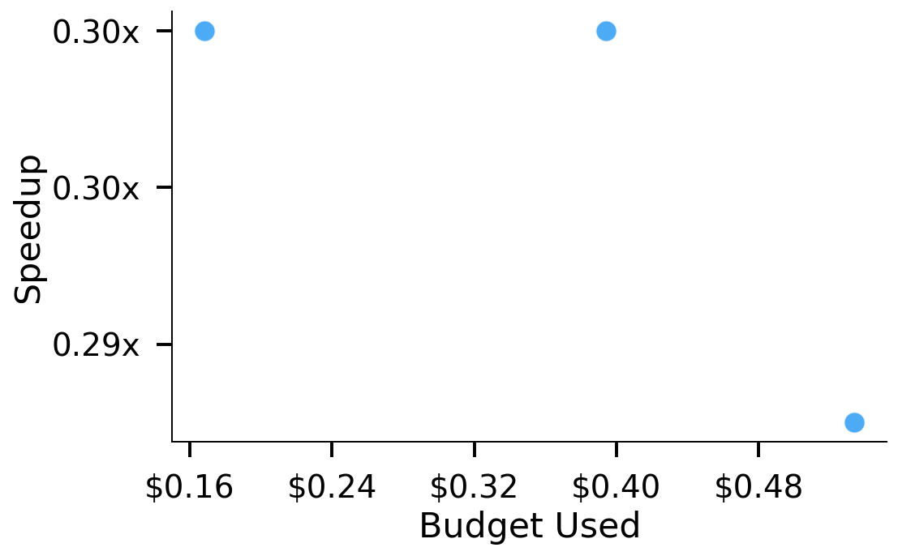
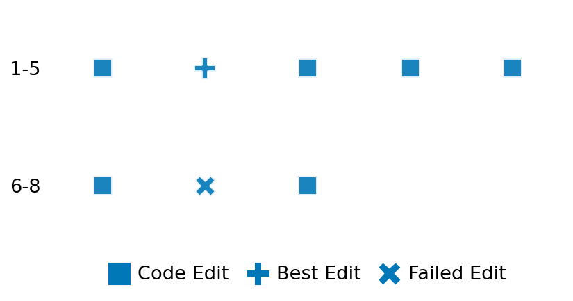

SETTING:
You're an autonomous programmer tasked with solving a specific problem. You are to use the commands defined below to accomplish this task. Every message you send incurs a cost—you will be informed of your usage and remaining budget by the system.
You will be evaluated based on the best-performing piece of code you produce, even if the final code doesn't work or compile (as long as it worked at some point and achieved a score, you will be eligible).
Apart from the default Python packages, you have access to the following additional packages:
- cryptography
- cvxpy
- cython
- dace
- dask
- diffrax
- ecos
- faiss-cpu
- hdbscan
- highspy
- jax
- networkx
- numba
- numpy
- ortools
- pandas
- pot
- psutil
- pulp
- pyomo
- python-sat
- pythran
- scikit-learn
- scipy
- sympy
- torch
YOUR TASK:
Your objective is to define a class named `Solver` in `solver.py` with a method:
```
class Solver:
def solve(self, problem, **kwargs) -> Any:
"""Your implementation goes here."""
...
```
IMPORTANT: Compilation time of your init function will not count towards your function's runtime.
This `solve` function will be the entrypoint called by the evaluation harness. Strive to align your class and method implementation as closely as possible with the desired performance criteria.
For each instance, your function can run for at most 10x the reference runtime for that instance. Strive to have your implementation run as fast as possible, while returning the same output as the reference function (for the same given input). Be creative and optimize your approach!
Your messages should include a short thought about what you should do, followed by a _SINGLE_ command. The command must be enclosed within ``` and ```, like so:
<Reasoning behind executing the command>
```
<command>
```
IMPORTANT: Each set of triple backticks (```) must always be on their own line, without any other words or anything else on that line.
Here are the commands available to you. Ensure you include one and only one of the following commands in each of your responses:
- `edit`: Replace a range of lines with new content in a file. This is how you can create files: if the file does not exist, it will be created. Here is an example:
```
edit
file: <file_name>
lines: <start_line>-<end_line>
---
<new_content>
---
```
The command will:
1. Delete the lines from <start_line> to <end_line> (inclusive)
2. Insert <new_content> starting at <start_line>
3. If both <start_line> and <end_line> are 0, <new_content> will be prepended to the file
Example:
edit
file: solver.py
lines: 5-7
---
def improved_function():
print("Optimized solution")
---
- `ls`: List all files in the current working directory.
- `view_file <file_name> [start_line]`: Display 100 lines of `<file_name>` starting from `start_line` (defaults to line 1).
- `revert`: Revert the code to the best-performing version thus far.
- `reference <string>`: Query the reference solver with a problem and receive its solution. If the problem's input is a list, this command would look like:
```
reference [1,2,3,4]
```
- `eval_input <string>`: Run your current solver implementation on the given input. This is the only command that shows stdout from your solver along with both solutions. Example:
```
eval_input [1,2,3,4]
```
- `eval`: Run evaluation on the current solution and report the results.
- `delete`: Delete a range of lines from a file using the format:
```
delete
file: <file_name>
lines: <start_line>-<end_line>
The command will delete the lines from <start_line> to <end_line> (inclusive)
Example:
delete
file: solver.py
lines: 5-10
```
- `profile <filename.py> <input>`: Profile your currently loaded solve method's performance on a given input. Shows the 25 most time-consuming lines. Requires specifying a python file (e.g., `solver.py`) for validation, though profiling runs on the current in-memory code.
Example:
```
profile solver.py [1, 2, 3]
```
- `profile_lines <filename.py> <line_number1, line_number2, ...> <input>`: Profiles the chosen lines of the currently loaded code on the given input. Requires specifying a python file for validation.
Example:
```
profile_lines solver.py 1,2,3 [1, 2, 3]
```
**TIPS:**
After each edit, a linter will automatically run to ensure code quality. If there are critical linter errors, your changes will not be applied, and you will receive the linter's error message. Typically, linter errors arise from issues like improper indentation—ensure your edits maintain proper code formatting.
**Cython Compilation:** Edits creating or modifying Cython (`.pyx`) files will automatically trigger a compilation attempt (requires a `setup.py`). You will be notified if compilation succeeds or fails. If it fails, the edit to the `.pyx` file will be automatically reverted.
If the code runs successfully without errors, the in-memory 'last known good code' will be updated to the new version. Following successful edits, you will receive a summary of your `solve` function's performance compared to the reference.
If you get stuck, try reverting your code and restarting your train of thought.
Do not put an if __name__ == "__main__": block in your code, as it will not be ran (only the solve function will).
Keep trying to better your code until you run out of money. Do not stop beforehand!
**GOALS:**
Your primary objective is to optimize the `solve` function to run as as fast as possible, while returning the optimal solution.
You will receive better scores the quicker your solution runs, and you will be penalized for exceeding the time limit or returning non-optimal solutions.
Below you find the description of the task you will have to solve. Read it carefully and understand what the problem is and what your solver should do.
**TASK DESCRIPTION:**
MatrixMultiplication Task:
Task Description:
Given two matrices A and B, the task is to compute their product C = A · B.
Matrix A is an n x m matrix and matrix B is an m x p matrix, so the resulting product C is an n x p matrix.
Input:
A dictionary with keys:
- "A": A list of n lists of numbers representing matrix A.
- "B": A list of m lists of numbers representing matrix B.
(The dimensions are such that the number of columns in A equals the number of rows in B.)
Example input:
{
"A": [
[1.0, 2.0],
[3.0, 4.0]
],
"B": [
[5.0, 6.0],
[7.0, 8.0]
]
}
Output:
A numpy array of shape (n, p) representing the product matrix C, where C = A · B.
Example output:
[
[19.0, 22.0],
[43.0, 50.0]
]
Category: matrix_operations
Below is the reference implementation. Your function should run much quicker.
import random
import numpy as np
| 01: def solve(self, problem: dict[str, list[list[float]]]) -> list[list[float]]:
| 02: """
| 03: Solve the matrix multiplication task by computing C = A · B.
| 04:
| 05: Args:
| 06: problem (dict): A dictionary with keys "A" and "B".
| 07:
| 08: Returns:
| 09: list: A list of lists of numbers representing the product matrix C.
| 10:
| 11:
| 12: NOTE: Your solution must pass validation by:
| 13: 1. Returning correctly formatted output
| 14: 2. Having no NaN or infinity values
| 15: 3. Matching expected results within numerical tolerance
| 16: """
| 17: A = np.array(problem["A"])
| 18: B = np.array(problem["B"])
| 19: C = np.dot(A, B)
| 20: return C
| 21:
This function will be used to check if your solution is valid for a given problem. If it returns False, it means the solution is invalid:
import random
import numpy as np
| 01: def is_solution(
| 02: self, problem: dict[str, list[list[float]]], solution: list[list[float]]
| 03: ) -> bool:
| 04: """
| 05: Validate the matrix multiplication solution.
| 06:
| 07: Checks:
| 08: - Presence of required keys ('A', 'B' in problem).
| 09: - Convertibility of lists to NumPy arrays.
| 10: - Dimension compatibility of A and B.
| 11: - Correct dimension of the result matrix C.
| 12: - Numerical correctness of C = A * B using np.allclose.
| 13:
| 14: :param problem: Dictionary containing input matrices 'A' and 'B'.
| 15: :param solution: The proposed result matrix C as a list of lists.
| 16: :return: True if the solution is valid and correct, False otherwise.
| 17: """
| 18: logging.debug("Validating Matrix Multiplication solution...")
| 19:
| 20: # Check for required keys in problem
| 21: if "A" not in problem or "B" not in problem:
| 22: logging.error("Problem dictionary missing 'A' or 'B' key.")
| 23: return False
| 24:
| 25: # Check solution type
| 26: if not isinstance(solution, list):
| 27: logging.error("Solution must be a list of lists.")
| 28: return False
| 29:
| 30: # Attempt to convert lists to NumPy arrays
| 31: try:
| 32: A = np.array(problem["A"])
| 33: B = np.array(problem["B"])
| 34: C_solution = np.array(solution) # Use the solution parameter directly
| 35: except Exception as e:
| 36: logging.error(f"Error converting matrices to NumPy arrays: {e}")
| 37: return False
| 38:
| 39: # Validate dimensions
| 40: if A.ndim != 2 or B.ndim != 2 or C_solution.ndim != 2:
| 41: logging.error("Matrices must be 2-dimensional.")
| 42: return False
| 43:
| 44: n, k1 = A.shape
| 45: k2, m = B.shape
| 46:
| 47: if k1 != k2:
| 48: logging.error(
| 49: f"Inner dimensions of A ({k1}) and B ({k2}) do not match for multiplication."
| 50: )
| 51: return False
| 52:
| 53: if C_solution.shape != (n, m):
| 54: logging.error(
| 55: f"Solution matrix C has incorrect dimensions. Expected ({n}, {m}), got {C_solution.shape}."
| 56: )
| 57: return False
| 58:
| 59: # Check for non-finite values in solution (optional but good practice)
| 60: if not np.all(np.isfinite(C_solution)):
| 61: logging.error("Solution matrix C contains non-finite values (NaN or Inf).")
| 62: return False
| 63:
| 64: # Calculate the expected result
| 65: try:
| 66: C_expected = np.dot(A, B)
| 67: except Exception as e:
| 68: # This should ideally not happen if dimensions are checked, but good to have
| 69: logging.error(f"Error during expected matrix multiplication: {e}")
| 70: return False
| 71:
| 72: # Compare the provided solution with the expected result
| 73: # Use np.allclose for robust floating-point comparison
| 74: rtol = 1e-5
| 75: atol = 1e-8
| 76: are_close = np.allclose(C_solution, C_expected, rtol=rtol, atol=atol)
| 77: if not are_close:
| 78: # Calculate difference for logging
| 79: diff = np.abs(C_solution - C_expected)
| 80: max_diff = np.max(diff)
| 81: logging.error(
| 82: f"Solution matrix C is numerically incorrect. "
| 83: f"Max absolute difference: {max_diff:.4e} "
| 84: f"(rtol={rtol}, atol={atol})"
| 85: )
| 86: # Optional: Log specific differing elements
| 87: return False
| 88:
| 89: logging.debug("Matrix Multiplication solution validation passed.")
| 90: return bool(are_close) # Ensure standard boolean return
| 91:
 AlgoTuner Trajectory
AlgoTuner Trajectory
AlgoTune Task:
matrix_multiplication
Model:
Claude Opus 4
Speedup
Fail
Total Budget
$1.00
Initial System Prompt
AlgoTune Task Description
MatrixMultiplication Task:
Task Description:
Given two matrices A and B, the task is to compute their product C = A · B.
Matrix A is an n x m matrix and matrix B is an m x p matrix, so the resulting product C is an n x p matrix.
Input:
A dictionary with keys:
- "A": A list of n lists of numbers representing matrix A.
- "B": A list of m lists of numbers representing matrix B.
(The dimensions are such that the number of columns in A equals the number of rows in B.)
Example input:
{
"A": [
[1.0, 2.0],
[3.0, 4.0]
],
"B": [
[5.0, 6.0],
[7.0, 8.0]
]
}
Output:
A numpy array of shape (n, p) representing the product matrix C, where C = A · B.
Example output:
[
[19.0, 22.0],
[43.0, 50.0]
]
Category: matrix_operations
Reference Implementation
import random
import numpy as np
def solve(self, problem: dict[str, list[list[float]]]) -> list[list[float]]:
"""
Solve the matrix multiplication task by computing C = A · B.
Args:
problem (dict): A dictionary with keys "A" and "B".
Returns:
list: A list of lists of numbers representing the product matrix C.
NOTE: Your solution must pass validation by:
1. Returning correctly formatted output
2. Having no NaN or infinity values
3. Matching expected results within numerical tolerance
"""
A = np.array(problem["A"])
B = np.array(problem["B"])
C = np.dot(A, B)
return CBest AlgoTuner-Generated Code
solver.py
import numpy as np
class Solver:
def solve(self, problem: dict[str, list[list[float]]]) -> list[list[float]]:
"""
Solve the matrix multiplication task by computing C = A · B.
Args:
problem (dict): A dictionary with keys "A" and "B".
Returns:
list: A list of lists of numbers representing the product matrix C.
"""
A = np.array(problem["A"])
B = np.array(problem["B"])
C = np.dot(A, B)
return C.tolist()Speedup vs Budget Plot
Speedup vs Budget

Action Sequence
